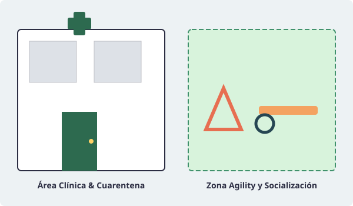
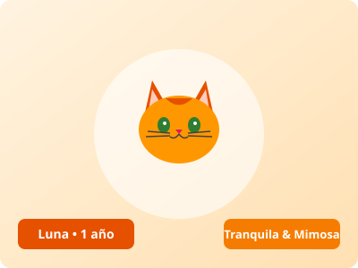
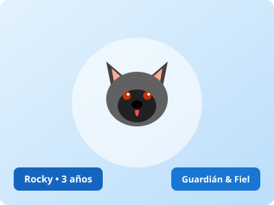

Toby
Mestizo cariñoso y lleno de energía. Ideal para familias activas que disfruten del senderismo o paseos por el campo.
Llegada al refugio:
Somos una asociación sin ánimo de lucro dedicada al rescate, atención veterinaria, rehabilitación y adopción ética de animales en situación de vulnerabilidad.

En EcoHuella defendemos el principio de que la adopción es un acto consciente y transformador. Cada perro y gato rescatado pasa por un exhaustivo chequeo médico, tratamiento antiparasitario y un proceso de socialización con adiestradores en positivo.
"Adoptar a un animal no cambiará el mundo entero, pero sin duda cambiará por completo el mundo de ese animal."
— Dra. Elena Morales, Directora Veterinaria de EcoHuella
Todos nuestros animales se entregan con microchip homologado, cartilla de vacunación al día y compromiso obligatorio de esterilización, garantizando una tenencia responsable respaldada por la normativa vigente de bienestar animal.

Conoce a tres de nuestros compañeros que llevan más de seis meses esperando un hogar definitivo:
Mestizo cariñoso y lleno de energía. Ideal para familias activas que disfruten del senderismo o paseos por el campo.
Llegada al refugio:

Gatita tranquila y ronroneadora. Se adapta perfectamente a la vida en piso y busca un rincón soleado junto a la ventana.
Llegada al refugio:

Noble, leal y muy atento. Excelente compañero con adiestramiento básico completado con éxito.
Llegada al refugio:
Accede a nuestros contenidos multimedia para conocer la atmósfera y el día a día de nuestro centro:
Vídeo promocional con recorrido guiado por nuestros espacios de recreo, enfermería y zonas de paseo.
Tono de audio generado para nuestra guía sonora explicativa y bienvenida interactiva.
La esterilización no solo previene camadas indeseadas y el consiguiente colapso de los centros de acogida, sino que reduce notablemente el riesgo de tumores mamarios, infecciones uterinas y problemas testiculares.
En nuestra clínica colaboradora aplicamos protocolos quirúrgicos de mínima invasión con recuperación en menos de 48 horas.
Todo animal registrado en EcoHuella dispone de un código numérico estándar conforme a la norma ISO 11784/11785:
FORMATO ISO: 981 0981 2345 6789 (España: código de país 724)